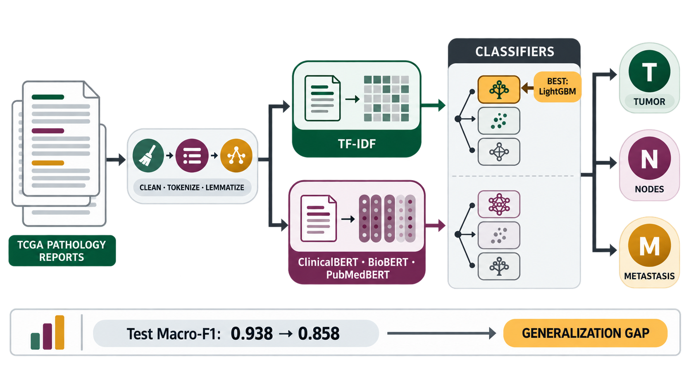

CaresAI at SMM4H-HeaRD 2026: Predicting TNM Staging
SMM4H-HeaRD @ ACL 2026 · Association for Computational Linguistics · pp. 206–210
We compare TF–IDF, biomedical BERT encoders, and neural classifiers for TNM staging from pathology reports, then examine the generalization drop on harder, less explicit cases.
Bib
BibTeX
@inproceedings{abubakar-etal-2026-caresai,
title = {{C}ares{AI} at {SMM}4{H}-{H}ea{RD} 2026: Predicting {TNM} Staging},
author = {Abubakar, Joseph Itopa and Jarme, Jorge and Igwezeke, Favour and Adewunmi, Mary},
booktitle = {Proceedings of the 11th Social Media Mining for Health Research and Applications (SMM4H-HeaRD 2026) Workshop and Shared Tasks},
month = jul,
year = {2026},
address = {San Diego, United States},
publisher = {Association for Computational Linguistics},
pages = {206--210},
doi = {10.18653/v1/2026.smm4h-1.32},
url = {https://aclanthology.org/2026.smm4h-1.32/}
}
Abstract
Abstract
The Tumor, Node, and Metastasis (TNM) staging system is critical to cancer treatment. This study predicts TNM stage labels independently from TCGA pathology reports and frames the problem as three multi-label classification tasks.
We explore classical and deep-learning approaches using TF–IDF features and representations from ClinicalBERT, BioBERT, and PubMedBERT with Logistic Regression, LightGBM, feed-forward networks, and wide residual networks. Although the resulting pipeline provides strong, reproducible baselines, performance falls on the harder test set, highlighting class imbalance, lengthy-document processing, and generalization as priorities for further work.